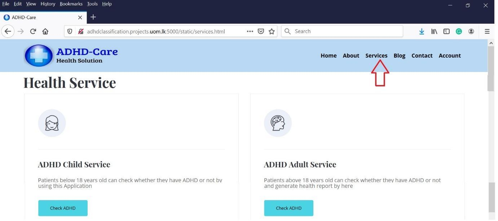

ADHD-Care Health Services
ADHD-Care system provides functionalities to as a support tool for identifying possible ADHD subjects from the patient test records. The main data types considered for this study are functional Magnetic Resonance Data (fMRI) and eye movement data.
For this experiment, users can use the system functionalities without a user account. However, the user gets a patient ID for the first time he/she uses the ADHD-Care services. Later, this patient ID can be used to track their records in the ADHD-Care application. Psychiatrists can sign up for an account and login to add patient details under that account and view the patient history via the psychiatric portal.
(The main interface of the ADHD-Care application - http://adhdclassification.projects.uom.lk:5000/)
Input data files:
fMRI data – Functional MRI brain scan images are using as a main input for the child - ADHD identification process in the ADHD-Care system. fMRI data determine the brain activities by detecting the changes in blood oxygen level in the different brain areas that occur as responses to several neural functionalities, which has also emphasized the capability of identifying various patterns of mental functionalities of brain activation. A sample fMRI data in nifti (.nii.gz) format which is a type of specialized brain scan images to map neural brain activity by imaging the change in blood oxygen level in brain cells is provided as a test input to the identification process. The given test fMRI image is a labeled sample brain scan image of a Non-ADHD person which is obtained from the New York University Child Study Center of ADHD 200 global competition data repository.
Eye movement data - Eye movements of patients are using as the main inputs for the adult - ADHD identification process in the ADHD-Care system. A test gaze related dataset which is in CSV file format with sample eye movements of an ADHD person has been provided for test purposes. This includes fixations (fixed gaze points), saccadic (rapid gaze movements) eye movements which were recorded by the Tobii-pro eye tracker along with fixation and saccade duration, average, the standard deviation in milliseconds, pupil diameters of left and right eyes, diagnose label and the gender of the participants. The experimental process of gathering eye movement measurements was based on reading the sentences that were displayed on the computer screen and the Tobii Pro X2-60 eye tracker was used for screen-based capture of gaze data which creates reflection patterns on the corneas of eyes.
Task 1: Identify possible ADHD subjects using fMRI data for children
This service is provided for child patients who are under the age of 18 to derive a probability of getting ADHD by using fMRI brain scanning data.
Task 2: Identify possible ADHD subjects using eye movement data for adults
This service is provided for adult patients who are above the age of 18 to derive a probability value of having ADHD using eye movement data.
Task 3: Psychiatric Registration
For an existing psychiatrist,
Learn about ADHD